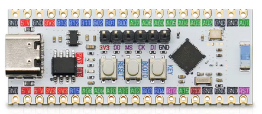

GD32VW553-HMQ
The GD32VW553-HMQ is the generic evaluation board for the GD32VW553HMQ6 (Nuclei N307, Wi-Fi 6 + BLE 5.3). It carries an on-board USB/Serial port provides the USB serial console.
{kind=link}

The GD32VW553-HMQ board.
Features
GD32VW553HMQ (QFN40, 4096 KB flash, 320 KB SRAM) and a PCB antenna
USB/Serial COM port over the USB Type-C connector
One LED on PC13
BOOT0/BOOT1 buttons, a power jumper and a reset button (NRST)
Serial Console
The console is UART0 (PB15 TX / PA8 RX), wired to the USB/Serial port.
It shows up on the host as /dev/ttyUSB0 at 115200 8N1.
LEDs
One LED sit on GPIO PC13 and is driven push-pull, active HIGH.
LED |
Pin |
Meaning in the vendor SDK |
|---|---|---|
LED1 |
PC13 |
CPU running |
With CONFIG_USERLED they belong to the application and are exposed as
/dev/userleds. With CONFIG_ARCH_LEDS the OS takes them over instead
and uses them to show its state: LED1 comes on once NuttX has started.
Flashing
The board is programmed with OpenOCD through a JTAG Probe. The GigaDevice OpenOCD fork (shipped with the vendor SDK) is required:
$ openocd -f openocd_gdlink.cfg \
-c "program nuttx.bin 0x08000000 verify reset exit"
NuttX is linked at 0x08000000, bypassing the vendor MBL bootloader.
Note
The chip mask ROM uses the first 0x200 bytes of SRAM. The linker script starts the application at 0x20000200 for that reason; do not move it.
If you prefer to use JLink, you wire this way:
JLink Pin |
GD32VW553 board Pin |
|---|---|
1 Vref |
3V3 |
5 TDI |
DI |
7 TMS |
MS |
9 TCK |
CK |
13 TDO |
DO |
15 RESET |
RST |
25 GND |
GND |
You can run JLinkExe on Linux this way:
$ sudo JLinkExe -if jtag
J-Link> connect
Device position in JTAG chain (IRPre,DRPre) <Default>: -1,-1 => Auto-detect
JTAGConf>
Specify target interface speed [kHz]. <Default>: 4000 kHz
Speed>
The selected device "GD32VW533HMQ6" is unknown to this software version.
Device "GD32VW553HMQ6" selected.
J-Link> loadbin nuttx.hex, 0
Flash layout
The full map is in the chip documentation. What matters when flashing this board:
Range |
Size |
Purpose |
|---|---|---|
0x08000000 – 0x083db000 |
3948 KiB |
Available to the firmware. This is what the linker script gives out; overflowing it is a link error |
0x083db000 – 0x083fb000 |
128 KiB |
progmem / LittleFS |
0x083fb000 – 0x08400000 |
20 KiB |
Wi-Fi NVDS – do not erase |
For reference, the configurations use a small part of that budget: nsh
135 KiB (3%), wifi 610 KiB (15%) and sta_softap 613 KiB (16%).
The ble config (BLE on top of wifi) brings the image to about 971 KiB (25%).
Warning
The last pages of the flash are not free: the Wi-Fi NVDS holds the RF calibration data and the MAC address, and erasing it breaks the radio. The progmem region ends exactly where the NVDS begins.
The region handed to progmem is set with
CONFIG_GD32VW55X_PROGMEM_START_ADDR and CONFIG_GD32VW55X_PROGMEM_SIZE;
nothing outside it is ever erased or written.
Configurations
Each configuration is built with:
$ ./tools/configure.sh gd32vw553k-start:<config>
$ make
nsh
Basic NuttShell configuration over the UART2 console. No radio.
wifi
NSH plus the Wi-Fi station support. The interface is registered as wlan0
with the MAC address read from the chip eFuse, and is driven with the standard
network tools:
nsh> wapi scan wlan0
nsh> wapi psk wlan0 <passphrase> 3
nsh> wapi essid wlan0 <ssid> 1
nsh> ifup wlan0
nsh> renew wlan0
nsh> ifconfig
nsh> ping 8.8.8.8
Note
Use ifup wlan0, not ifconfig wlan0 up: ifconfig interprets its
second argument as an IP address.
Note
The station is WPA2-only. A WPA3-transition network (WPA2/WPA3 mixed
mode) associates through WPA2-PSK; a WPA3(SAE)-only network is refused
up front with ENOTSUP and a console message naming the unsupported
AKM, instead of letting the prebuilt supplicant attempt the SAE
handshake (which faults).
The RTC and the SNTP client are enabled, so the clock can be set from the network:
nsh> ntpcstart
nsh> date
sta_softap
NSH plus the Wi-Fi softAP: the board becomes an access point and a DHCP server. The single-VIF firmware does station or AP at a time (not both at once), so this is a softAP, not the simultaneous STA+AP of some other parts.
Bring it up with the standard tools:
nsh> wapi mode wlan0 3 # 3 = master (softAP)
nsh> wapi psk wlan0 12345678 3 # WPA2-PSK
nsh> wapi essid wlan0 nuttxwifi 1 # start the AP
nsh> dhcpd_start wlan0 # DHCP server, in the background
A client then sees nuttxwifi, associates with WPA2, and gets an address
from the 10.0.0.0/24 pool (the AP is 10.0.0.1).
Note
Use WPA2, not WPA3. The SAE (WPA3) handshake on the AP side is deep on the
stack; with the default task stacks it overflows inside the elliptic-curve
crypto and faults. This configuration raises CONFIG_INIT_STACKSIZE to
8192 and CONFIG_DEFAULT_TASK_STACKSIZE to 4096 for the same reason – the
radio tasks need the headroom.
Note
dhcpd_start spawns the server as a background task and returns. The
plain dhcpd command, confusingly, runs the server blocking in the
foreground.
ble
wapi plus BLE (CONFIG_GD32VW55X_BLE) and the demo GATT service
(CONFIG_GD32VW55X_BLE_GATT_DEMO). The board advertises a connectable set
named NuttX and registers a minimal “transparent UART” service (16-bit
UUIDs 0xffe0 / RX 0xffe1 / TX 0xffe2). Advertising restarts on
every disconnection, so the device stays discoverable across connections. A
central connects, discovers the service, and a write to the RX characteristic
is logged on the board console:
nsh> BLE RX (11): Hello world
Note
The central -> board write is exercised with a write command
(write-without-response), which is reliable. The prebuilt vendor
controller does not complete a write-request (write-with-response) or the
CCCD subscribe issued by a Linux BlueZ host, so the TX notification echo
(board -> central) is best exercised from a phone app such as nRF Connect.
This is why BLE keeps CONFIG_EXPERIMENTAL.
ostest
nsh plus the NuttX OS test suite (CONFIG_TESTING_OSTEST). Run it from
the shell to exercise the scheduler, synchronisation primitives and the FPU
context switch:
nsh> ostest
...
ostest_main: Exiting with status 0
The rr_test (round-robin with a 30000-prime workload) makes the full run
take a couple of minutes on this core; every sub-test reports nerrors=0.
Status
All seven configurations were validated on hardware:
nsh: boots, console, heap and task list are healthy.wifi: full station path over a live AP –wapi scanlists the nearby networks, WPA2 associates through the four-way handshake, DHCP obtains an address, andpingreaches the internet.sta_softap: the board’s own AP – a client sees the SSID, associates with WPA2, gets an address from the board’s DHCP server, and pings the board.ble: advertisesNuttX, a central connects, the demo GATT service enumerates, and a write to the RX characteristic is received on the board console (central -> board).ostest: the OS test suite runs to completion (every sub-test reportsnerrors=0and it ends withostest_main: Exiting with status 0).
BLE (CONFIG_GD32VW55X_BLE) is marked EXPERIMENTAL and off by default. The
prebuilt libble is an all-in-one controller plus RivieraWaves host with no
HCI transport, so the port drives the vendor host directly (it does not
register a NuttX bt_driver_s). The ble configuration enables it along
with a demo GATT service; see that section above for what is validated and the
notification caveat. A reusable test tool for this is kept with the
out-of-tree port notes.
Note
CONFIG_ARCH_LEDS must stay off on this board. With the OS driving the
LEDs, the serial console dies in the Wi-Fi configurations (the console UART
shares the work queue path); the LEDs belong to the application
(CONFIG_USERLED), and every defconfig here disables ARCH_LEDS
explicitly.